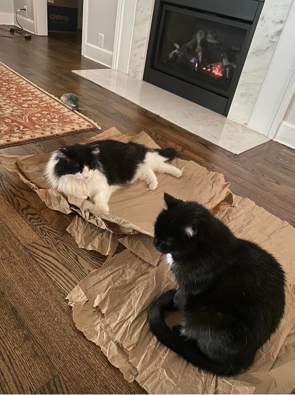

Welcome to BEE 4750/5750!
Lecture 01
August 26, 2024
Course Overview
About Me
Prof. Vivek Srikrishnan, , 318 Riley-Robb
- From Wappingers Falls, NY (via Champaign-Urbana, IL and State College, PA);
- Non-academic highlight: Was on Jeopardy! in 2016;
- Researches climate risk management;
- Particular interest in unintended consequences which result from neglecting uncertainty or system dynamics.
Meet My Supervisors

About the TA
Gabriela Ackermann Logan, M.S./Ph.D. student, , 319 Riley-Robb
- From New Bedford, NY (via Medford, MA)
- Interested in energy system transitions and supply chain/logistical needs.
What Are We Discussing This Semester?
What Is A System?
A system is:
“an interconnected set of elements that is coherently organized in a way that achieves something…
A system must consist of three kinds of things: elements, interconnections and a function or purpose.”
— Donella Meadows, Thinking in Systems: A Primer, 2008
Examples of Systems
Can we think of any examples of systems?
What about things that are not systems?
Why Are Systems Interesting?
In other words, a system involves an interconnected set of components.
Those interconnections can lead to very different dynamics and outcomes than if the component processes were studied in isolation.
Example Topics
Topics
- Define systems
- Simulate system dynamics
- Analyze and assess risk
- Make decisions with optimization
- Explore trade-offs across objectives
Example Systems
- Air pollution
- Wastewater management
- Electric power systems
- Solid waste management
What Do You Hope To Get Out Of This Course?

Text: VSRIKRISH to 22333
Course Organization
- Introduction to Systems Analysis
- Simulating Systems and Risk
- Systems Management and Optimization
- Decision-Making Under Uncertainty
Course Policies
Disclaimer
Sitting in class/looking at these notes is not a substitute for reading the syllabus.
Attendance
Not required, but students tend to do better when they’re actively engaged in class
Office Hours
- Prof. Srikrishnan: T 10-11am, W 1:30-2:30 in 318 Riley-Robb
- TA: M 1-2:30 in 319 Riley-Robb
- Almost impossible to find a time that works for all (or even most); please feel free to email to make appointments as/if needed.
- Can be busy, will triage based on urgency (e.g. if you want code help but have not done basic debugging steps, you will be asked to wait until others are helped).
Accomodations
If you have any access barriers in this class, please seek out any helpful accomodations.
- Get an SDS letter.
- If you need an accomodation before you have an official letter, please reach out to me ASAP!
Course Website
https://viveks.me/environmental-systems-analysis
- Central hub for information, schedule, and policies
- Will add link and some information to Canvas (assignment due dates, etc)
Communications
Use Ed Discussion for questions and discussions about class, homework assignments, etc.
- Try to use public posts so others can benefit from questions and can weigh in.
- I will make announcements through Ed, so check regularly.
- Urgent announcements will also be emailed.
When urgency or privacy is required, email is ok.
Julia
In this course, we will use the Julia programming language.
All assignments, labs, and AEs will be provided as Jupyter Notebooks.
What Is Your Programming Experience?
Text: VSRIKRISH to 22333
Jupyter Notebooks
We will use Jupyter Notebooks for most computing tasks (including assignments).
- Allow for interactive evaluation of code and integration with text (including nicely typeset mathematics)
- Can export to PDF (or HTML -> PDF) for submission to Gradescope.
- Be careful before submitting: Evaluate all cells in order.
GitHub Classroom
Homework assignments and labs will be distributed using GitHub Classroom.
- Every student will have a unique “repository.”
- When assignment is released, I will share the link for repository creation on Ed Discussion.
- Makes it easy to share code for assistance and debugging (share links to repositories, not out-of-context code and screenshots).
Debugging Code
- Look at the class FAQ!
- Search for the error message you’re seeing.
- Try to divide code into logical “chunks” and test each one to isolate the error where there’s a syntax or conceptual error.
- Post on Ed. Do not include a screenshot, link to GitHub or provide a small snippet showing the syntax you’re trying.
- Come to office hours (last recourse!).
Grades
Assessments
| Category | Weight |
|---|---|
| Participation | 10% |
| Exercises | 10% |
| Labs | 10% |
| Homework | 20% |
| Prelims | 30% |
| Term Project | 20% |
Overall Guidelines
- Collaboration highly encouraged, but all work must reflect your own understanding
- Submit PDFs on Gradescope
- “Standard” rubric available for HW/exams
- Always cite external references
- Curve unlikely (not worth asking about…)
Late Work Policy
- Most work can be submitted up to 24 hours late at a 50% penalty.
- If you have an approved reason (illness, injury, etc), let me know ahead of time and we will make accomodations.
Regrade Requests
- Can be submitted on Gradescope up to 1 week after grades are released.
- Must include a brief justification.
- Will be evaluated only on the basis of the work in the submission.
- Can lose points if me/TA notice we missed a mistake initially!
Regrade Requests: Special Cases
- If you (correctly) point out that your grade was graded too leniently, you will get bonus points back.
- If a significant error (as defined by me) is found in the solutions, everyone in the class will receive full credit for that (sub)problem.
Labs
- In-class guided activities, but may need some time after class to complete
- Focus on “how” to apply methods and concepts from class
- If you can’t bring a laptop to these classes, you can work with someone else
- Can work in groups, but must submit your own work.
- Due by 9:00pm on the lab day, will drop one.
- Graded on a scale of 0-3, largely based on effort.
Exercises
- Auto-graded “quizzes” on Canvas.
- Focus on conceptual questions or quick setups/calculations (no coding)
- Can submit as many times as you like.
- Due before Monday class the next week.
- Will drop one.
Homework Assignments
- 5 in total, due two weeks after assignment.
- Focus on new or extended applications
- Managed with GitHub Classroom
- Due by 9:00pm on the due date (usually Thursday)
- No drops.
- Graded on correctness.
Term Project
- Analyze a system of interest, including the regulatory environment, going beyond class examples/methods.
- Work in groups of 3–4, 5750 students can work alone.
- Submit proposal on 11/1/24.
- Record presentation by end of semester for peer review by classmates.
- Submit report, peer reviews, group/self evaluations by end of finals week.
Participation
- The class works best when everyone is engaged and collaborative
- Attending every class;
- Asking questions in class or on Ed;
- Answering questions in class or on Ed;
- Coming to office hours.
- We’re paying attention! Participation points not “free”.
Prelims
- Two in-class prelims (10/09, 11/11);
- Focus on concepts, problem formulations, interpretation.
- Exams will be scanned and put on Gradescope for grades/feedback.
- Will discuss ~two weeks after the exams after grades are returned.
- Accomodations/makeups handled through ATP.
Academic Integrity
Hopefully Not a Concern…
- Collaboration is great and is encouraged!
- Knowing how to find, evaluate, and use helpful resources is a skill we want to develop.
- Don’t just copy…learn from others and give credit.
- Submit your own original work.
Academic Integrity
Obviously, just copying down answers from Chegg or ChatGPT and passing them off as your own is not ok.
But often lines aren’t that simple. Let’s quickly consider some scenarios (h/t to Tony Wong for these).
Academic Integrity: Scenario 1
Dan searches the internet for relevant code and copy-pastes it into his Jupyter notebook. They cites the source of the codes.
Is this ok?
Probably Not
- What portion of the work is Dan’s?
- How important were the codes?
- Did Dan understand what they copied?
Academic Integrity: Scenario 1
Dan searches the internet for relevant code and copy-pastes it into his Jupyter notebook. They cites the source of the codes.
What Should Dan Do?
Dan should paraphrase the codes they found to incorporate them with his own code, and then also cite them.
Academic Integrity: Scenario 2
Matthew and Rhonda work together to figure out how to implement the codes, but each works on their own computer and develops their own solutions.
Is this ok?
Definitely!
- Independent implementations shows understanding.
Academic Integrity: Scenario 3
Felix and Rachel are working together on a problem involving a derivation. Rachel types it up in LaTeX and sends the code to Felix, who pastes it into his Jupyter notebook.
Is this ok?
Likely Not
- Did Felix contribute enough to the derivation?
- Definitely not OK if Felix doesn’t give Rachel credit for their contribution.
Academic Integrity: Scenario 4
Darren uses ChatGPT to debug an error in their homework code. They fix the error and credits ChatGPT in his References section.
Is this ok?
Well-meaning, but no!
- Using ChatGPT (or other ML tools) can be ok, but…
- Need to ask permission and thoroughly document the query and the exact response.
ChatGPT: The Stochastic Parrot
- Think of ChatGPT as a ranting drunk: It’s stringing together words or code it heard in a way that sounds reasonable, but there’s no sense of concept.
- ChatGPT debugging can be useful: Think of it as an approximation of a Google search. But it can also lead to new errors with no clear way to fix them, since you don’t understand what you did.
- Hallucinations: ChatGPT often just makes stuff up. Do you want your grade to involve a ChatGPT hallucination?
AI Policy
Using AI tools is not prohibited. But:
- Use them thoughtfully;
- Ask permission before using;
- Carefully document your query and the output, or we can’t distinguish LLM output from your own understanding.
Upcoming Schedule
Next Classes
Wednesday: Lab 1: Julia and GitHub basics.
- Lab 1 link is available on Ed. Click it to accept the lab before class.
- Follow setup instructions on website: choose whether you’d like to try local or remote workflows (this isn’t a permanent decision!).
Next Week: Introduction to Systems Analysis
Assessments
- Lab 1: Wednesday
- HW 1: Available, due 9/6.